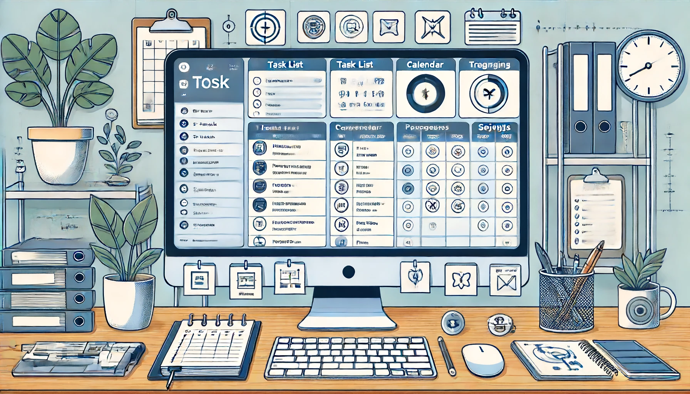
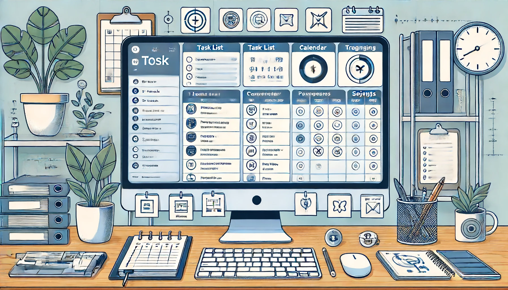

Welcome to TaskFlow
Your ultimate tool for project management. Register or login to get started.
Your ultimate tool for project management. Register or login to get started.
Manage your projects and tasks efficiently.
Track your tasks and collaborate with your team.